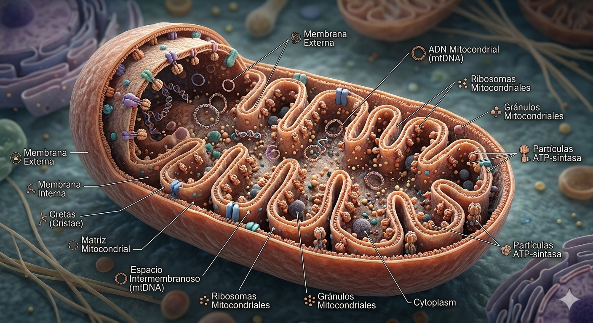

Hub Central de Bioenergética y Modificación Molecular
La mitocondria no es una estructura estática, sino un orgánulo dinámico de doble membrana:
A través de la fosforilación oxidativa, el complejo enzimático ATP Sintasa funciona como un motor molecular nanométrico, convirtiendo el gradiente electroquímico en la moneda energética de la vida.
Contiene 37 genes esenciales. A diferencia del ADN nuclear, el ADNmt tiene herencia materna y una tasa de mutación significativamente más alta debido a la proximidad a los radicales libres (ROS).
Procesos vitales de mantenimiento:
La liberación de Citocromo c al citoplasma es la señal irreversible que activa las caspasas, demostrando que la mitocondria decide no solo cómo vive la célula, sino cuándo debe morir.
Reto actual: La modificación del genoma mitocondrial. El uso de Mito-TALENs y nuevas variantes de CRISPR-Cas9 dirigidas específicamente a este orgánulo abre la puerta a corregir enfermedades metabólicas hereditarias.
